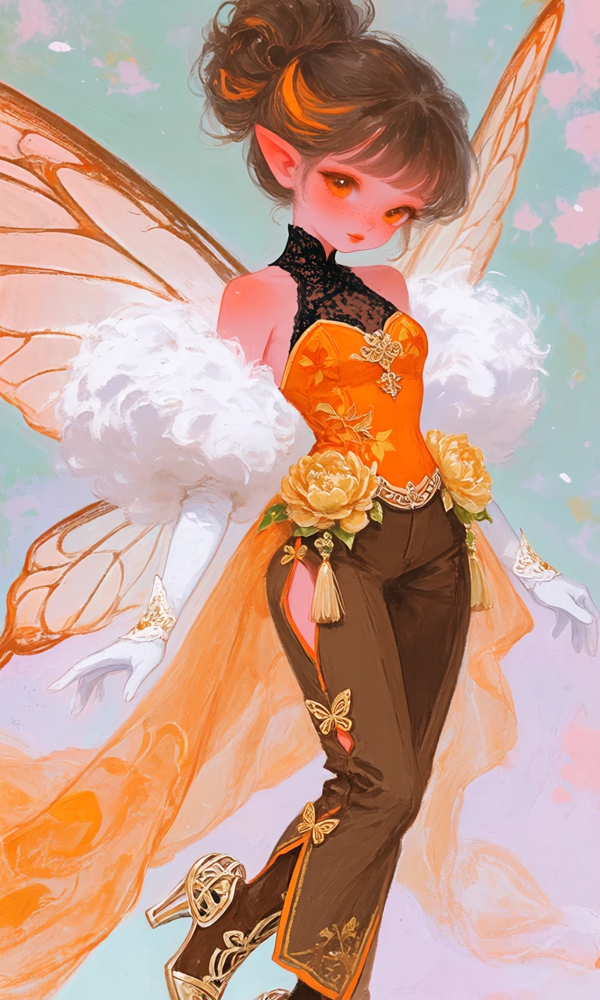
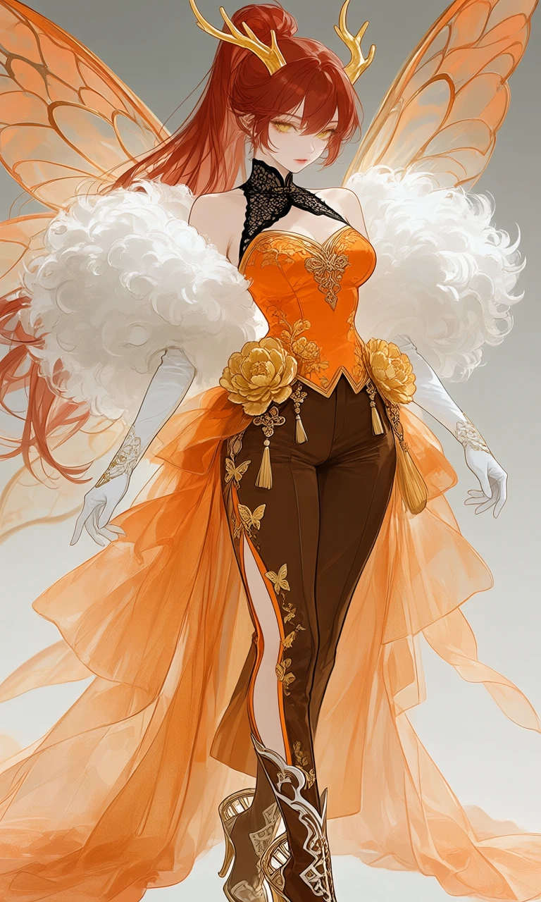

Marigold Overture

Outfit Prompt
Outfit:
Halter-neck bodice: A vibrant orange, strapless-style top with a high black lace/mesh collar that wraps around the neck. The orange fabric has subtle autumn leaves pattern.
Chest design: The top is form-fitting with a sweetheart/structured bust line, accented by gold floral embroidery and a central knot or clasp.
Sleeves: Dramatic, voluminous white feathery/puffy shoulder accents that resemble clouds or large blossoms. These contrast beautifully with the orange and brown, giving a soft, ethereal feel.
Arms: Long, elegant white gloves with lace or embroidered cuffs and small gold details at the wrists.
Lower Body & Legs
Main garment: brown form-fitting pants/leggings with high side slits that run up the thighs, revealing a lot of leg. The slits are edged with orange and decorated with small gold butterfly.
Overlay train skirt: A long, flowing sheer orange fabric piece attached at the waist that drapes like a train. It flows dramatically behind and to the sides.
Waist details: A wide decorative belt/sash area featuring large golden peony/flower ornaments and hanging tassels. This is the focal point of the outfit’s traditional Chinese influence.
Footwear
Brown high-heeled boots with intricate gold and white geometric designs. The heels have a structured, almost armor-like or high-fashion cage element at the back, blending elegance with a slight edginess.
Outfit Examples



